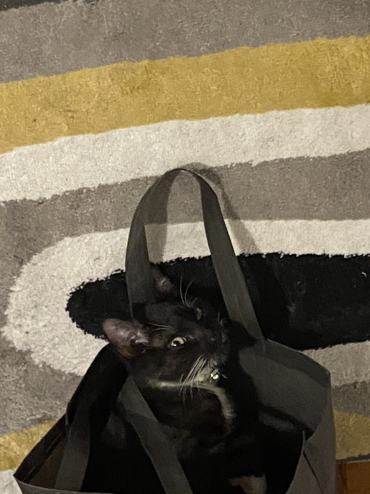
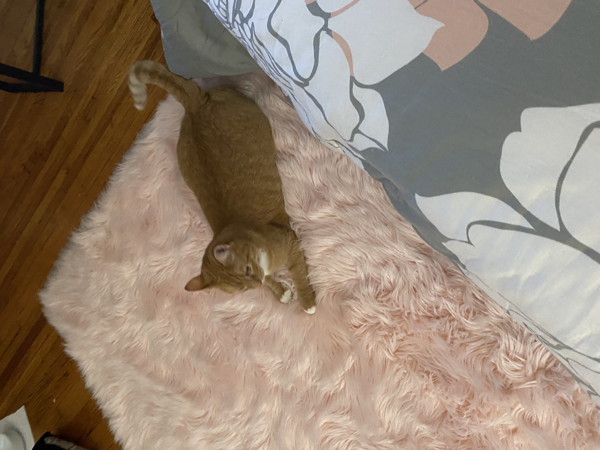

Roslyn was released on October 15, 2018. She enjoys cooking, spending time with her daughter and friends and playing with her cat Phoenix. She is passionate about the work she is doing to end mass incarceration.
This is Phoenix and his girlfriend shishi(pronounced She-She) Aren't they jus SO CUTE!


click on an option to find out one of my favorite dishes
Here are some of the campaigns Roslyn has participated in.
RAPP- Releasing Aging People in Prison. click here